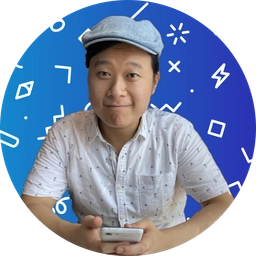

謝俊傑 Jerome Tse
教育者・工程師・創辦人
Applied AI Academy 聯合創辦人兼 CTO・香港大學 客席講師
Applied AI Academy 聯合創辦人兼 CTO・香港大學 客席講師
個人簡介
工程師與連續創辦人，現轉型為教育者。Applied AI Academy聯合創辦人兼 CTO， 打造手機學習平台，協助在職人士每天用十分鐘建立實用 AI 能力。
- 香港大學 客席講師，講授 AI 與創業。
- Applied AI Academy 上線 3 個月，學員與導師逾 7,000 人。
- 過去聯合創辦 Freehunter（自由工作者平台）及 Jupitrr AI（AI 影片工具），累積產品與工程實戰經驗。
主要經歷
聯合創辦人兼 CTO，Applied AI Academy
香港
手機 AI 學習平台，以十分鐘日課協助在職人士掌握實用 AI 工作流。
- 三個月內透過自然增長累積 7,000+ 學員。
- 主導工程與 AI 架構，包括日課生成、AI 助教與依角色／經驗分級的個人化系統。
- 整合多行業在職人士訪談，將真實工作場景轉化為課程內容。
教學與演講
- 香港大學 客席講師 — 創業與應用 AI 主題講座。
- 黑客松評審 — 國泰航空黑客松、多倫多大學黑客松。
- 導師與顧問 — 為早期創辦人與學生團隊提供定期指導。
- 公開分享 — 撰寫並分享應用 AI、學習方法與工具評估等主題內容。
核心能力
教學與課程
在職人士課程設計・學員社群營運・一對一指導・公開演講・雙語教學。
AI 與工具
Claude・OpenAI・Gemini・Whisper・Prompt 工程・代理與檢索系統・AI 工作流評估。
工程
TypeScript・React / Next.js・React Native・Node.js・Python・PostgreSQL。
語言
語言
粵語、英語、普通話。
學歷與獎項
工商管理學士・主修資訊系統與電腦科學。
喇沙書院
- The Loop HK 30 Under 30